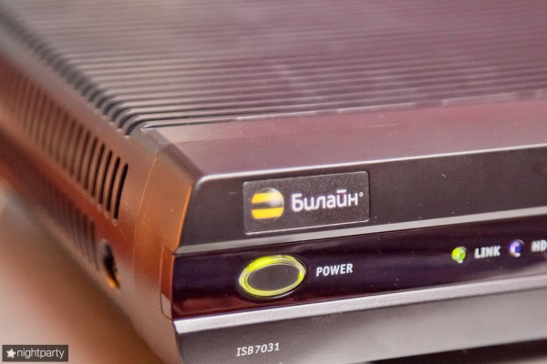
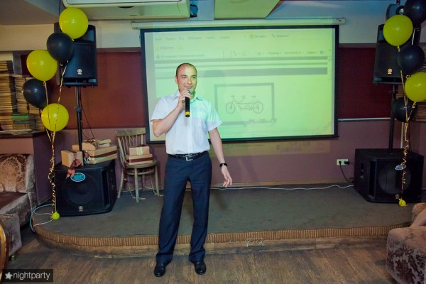
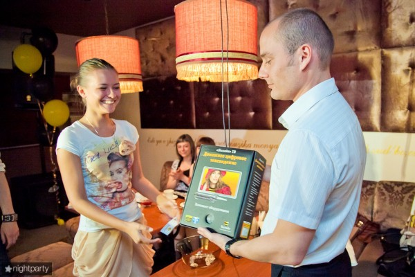
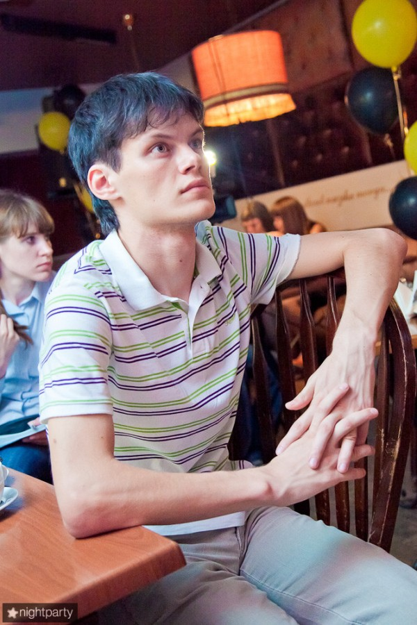
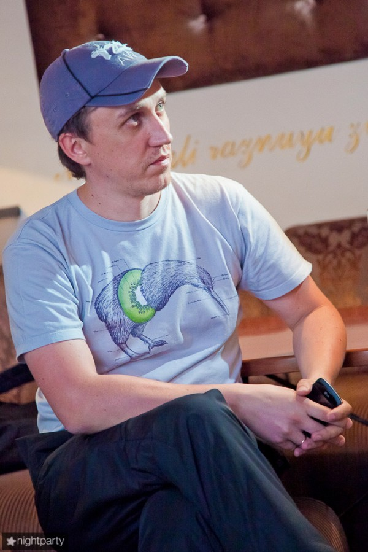

В четверг по приглашению Алексея Калины из Билайна посетил презентацию новой для Кемерово услуги жёлто-черного сотового оператора — домашнего телевидения.
Время кабельного телевидения приходившего по коаксиальному кабелю в наши дома последние лет 20 стремительно уходит. Его преимущество — много каналов — становится незначительным для жителей современных городов. Жители хотят не только иметь выбор, но и получать качество. Желательно HD.
Как нельзя лучше для этого подходит широкополосный доступ, организованный с помощью витой пары, которую, в свою очередь в последнее время вовсе интенсивно замещает оптоволокно. Обладающее, на данный момент, огромным запасом по скорости.
IPTV я смотрю довольно давно. Как только в Кемерово появилась услуга «Твист» от Сибирьтелеком, я в дополнение к интернету стал покупать и её. Каналов много, качество неплохое, стоит в пределах.
В отличие от телевидения по коаксиальному кабелю, IPTV предполагает на стороне клиента наличие специальной приставки-ресивера. В приставке, её еще называют Set top box, предустановлено специальное ПО, она декодирует цифровой сигнал и преобразовывает его в телевизионный.
Приставку у Сибирьтелекома можно купить (стоит 3000 рублей) или платить аренду — 90 рублей в месяц.
У технологии Билайна перед Сибирьтелекомом есть несколько преимуществ. В основном все они являются следствием одного — в приставке от Билайна есть винчестер.

Будущее с приставкой от Билайна выглядит так:
Вы приходите домой, садитесь к телевизору, там идёт кино которое вы ждали. И по другому каналу тоже, а по третьему — спорт, без которого вообще не жизнь.
Вы нажимаете на кнопку, фильм начинает записываться. Нажимаете еще на одну. Второй тоже. Остаётся спорт. Сидите смотрите, отвернулись к холодильнику за бокалом пива, а в это время — ГООООЛ! Да ничего страшного. Нажимаете на перемотку назад (весь эфир за последние 90 минут пишется в буфер автоматически) и наслаждаетесь победой, ну или переживаете проигрыш. Пиво зовет сходить в соседнюю комнату, а может собака, а может хочет поиграть жена или сын — не вопрос. Ставите эфир на паузу и продолжаете просмотр, когда наиграетесь.
Презентацию в караоке-баре «Квартира» для приглашённых журналистов провёл директор по развитию широкополосного доступа и новых видов бизнеса Кемеровского филиала ОАО «ВымпелКом» Владимир Лазовский. Всё рассказал, показал в действии и в ходе ответил на возникшие вопросы. Коих лично у меня было немало.

После презентации среди присутствовавших гостей был разыгран комплект для подключения (который, к слову, стоит 8000 рублей). Выиграл его, к сожалению не я, а к счастью Елена Болтинова из журнала «Променад». От всей души поздравляю.

Возвращаясь к самому подключению, стоит отметить, что покупать приставку, которая, как и в случае с Твистом подходит только для данного оператора, не мой взгляд глупо. Проще взять её в аренду. А для подключившихся уже сегодня аренда приставки до 31 июля вовсе будет стоить 0 рублей.
Огорчает лично меня пока только одно. В моём доме, который, по словам Владимира, не входит в 90% охваченных Билайном кемеровских домов данное удовольствие пока недоступно. Впрочем Владимир записал мой адрес и номер. Обещал посодействовать. Будем ждать.



На тему:
- Все фотографии на nightparty
- Пост у Алексея Калины
- Новость на Кемеровском городском сайте